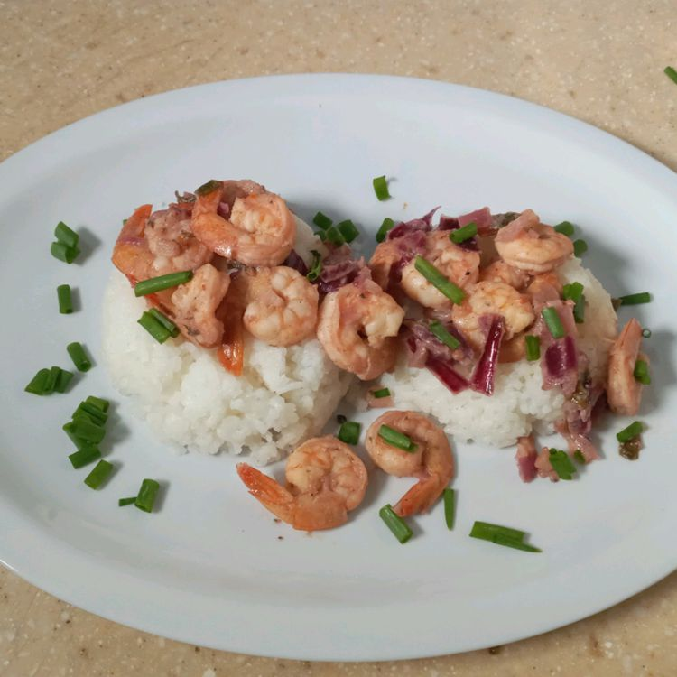

Udang Poedas
Home

A spicy pan-seared shrimp dish flavored with sambal oelek.
ingredients
- A spicy pan-seared shrimp dish flavored with sambal oelek.
- ½ cup butter
- 3 cloves garlic, minced, or more to taste
- ½ lemon, juiced, divided
- 1 ½ teaspoons butter
- ¾ cup chopped onion
- ½ cup sambal oelek (Indonesian red chile paste)
- 3 cups water
- 3 cups sushi rice
- ½ bunch green onions, chopped
steps
-
Place shrimp in a large bowl of cold water until thawed, 10 to 15
minutes.
-
Melt 1/2 cup butter in a microwave-safe glass or ceramic bowl in the
microwave in 15-second intervals, 30 seconds to 1 minute. Mix in garlic
and half the lemon juice.
-
Melt 1 1/2 teaspoon butter in a large skillet over medium heat. Add
onion; cook and stir until translucent, about 5 minutes. Add shrimp,
garlic butter mixture, and sambal oelek. Cook and stir until garlic is
cooked and shrimp are heated through, 7 to 8 minutes.
-
Bring water and sushi rice to a boil in a saucepan. Reduce heat to low,
cover, and simmer until rice is tender, about 15 minutes. Remove from
heat, and let stand, covered, until liquid has been absorbed, about 10
minutes.
-
Serve shrimp over rice, topped with remaining lemon juice and green
onions.
note:
You can keep the tails on the shrimp if preferred.